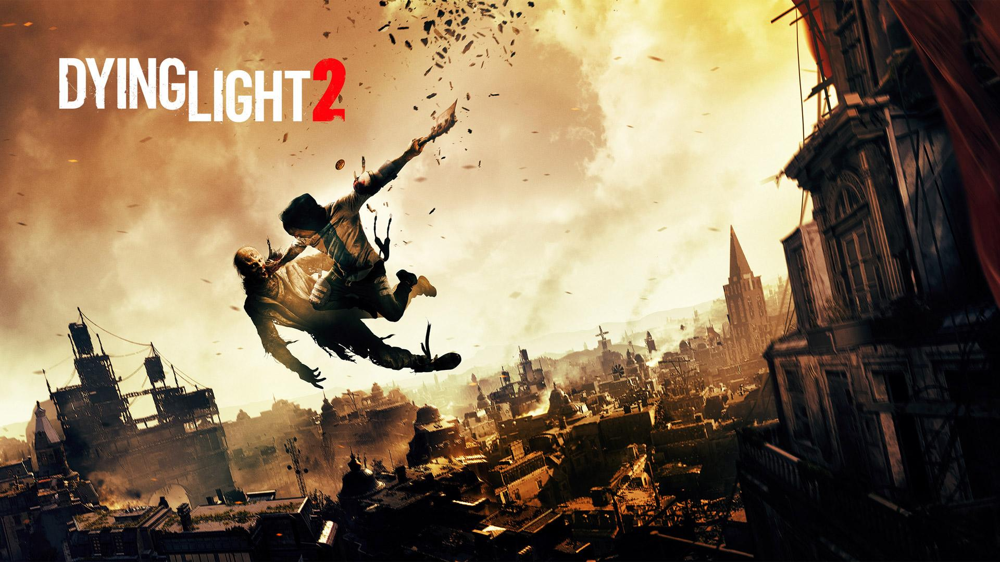
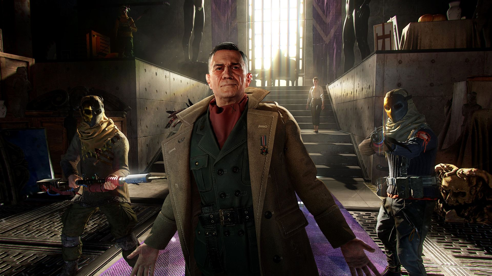
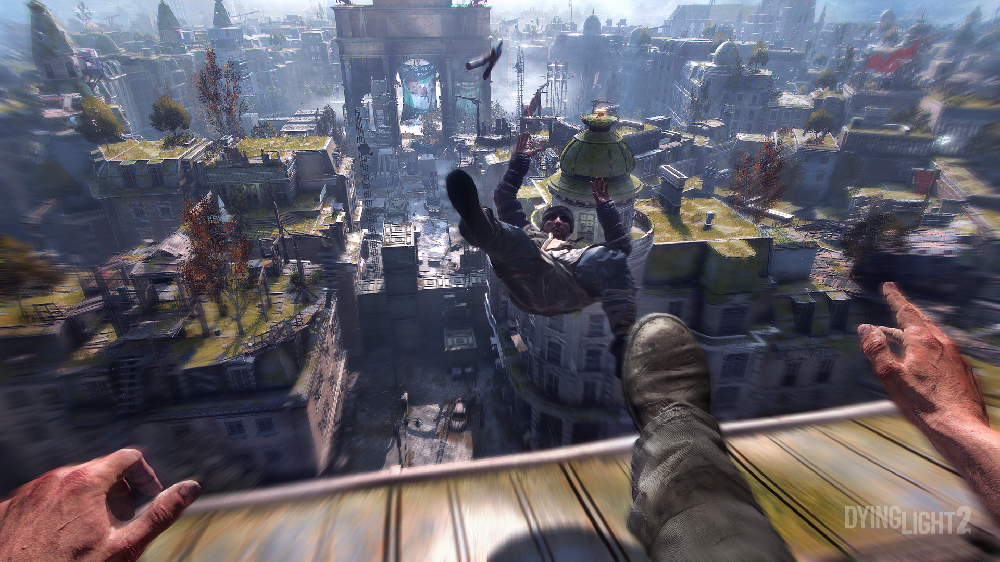

Dying Light 2 - стали известны новые подробности

Официальный твиттер-аккаунт Dying Light 2 сообщил, что разработка игры идёт гладко. По словам разработчиков, игра выглядит лучше с каждым днем. Компания поделится новостями, как только будет готова. Возможно, это произойдет на церемонии награждения The Game Awards 2020, которая пройдёт в декабре текущего года. Напомним, что дата выхода Dying Light 2 пока не объявлена.Напомним, что первая Dying Light вышла 27 января 2015 года для консолей PS4, Xbox One и PC. Игра была высоко оценена как критиками, так и обычными игроками (94% в Steam).

Стало известно, что сюжет Dying Light 2 никак не связан с оригинальным Dying Light и аддоном The Following. Нас будут ждать новый протагонист, новые персонажи и новый город. Для того, чтобы в полной мере насладиться игрой, проходить предыдущую часть необязательно. Также известно, что события Dying Light 2 разворачиваются через 15 лет после зомби-апокалипсис, а место действия перенесли в вымышленный европейский мегаполис.
Карта в 4 раза больше всех локаций Dying Light и The Following вместе взятых.Для исследования доступны различные районы, включая центр города, старый город и промзону.
Помимо этого, паркур стал играть и более важную роль в геймплее: если в первой части он использовался лишь для перемещения по городу, то в сиквеле на нем будут завязаны отдельные квесты, челленджи и внутриигровые события. Завезут и основанные на нем паззлы.
В боевке сделают упор на ближний бой. Завезут и луки, потому что они отлично вписываются в сеттинг "современного Средневековья" [в беседе употребляется термин "dark age" (темный век) - темными веками принято называть период Средневековья с VI по X века - прим. Huntoki]. Огнестрельное оружие никуда не денется, но работа над ним предстоит еще долгая. Разработчики стараются улучшить стрельбу, но при этом выработать верный баланс между различными видами вооружения, избежав ошибок оригинала. Ведь какой смысл возвращаться к холодному оружию, если вы уже разжились AK-47?
Как итог, нас ожидает очень увлекательное игровое приключение, но пока что нам остаётся ждать дату выхода и надеятсься на лучшее